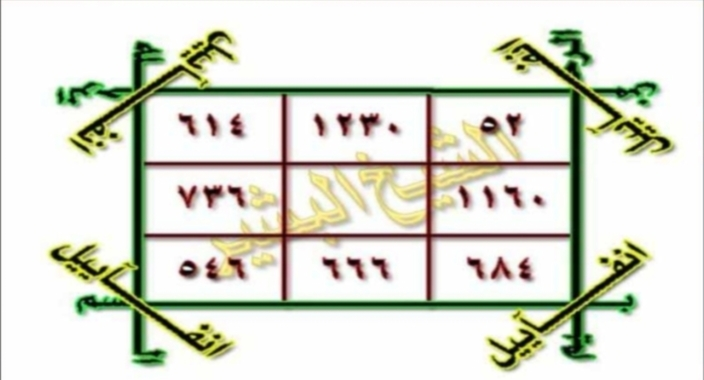

HALAMAN 20 — AL-WAFQU AL-MUTSALLATS 3×3 — الْوَفْقُ الْمُثَلَّثُ
arab
latin
Terjemahan
Syarah dan Penjelasan
Wafaq musallas 3×3 Tadmīr azh-Zhālim berbingkai hijau dengan empat sudut Anfāyīl (diagonal) dan bingkai basmalah muwāliyah lil-mutsallas. Delapan angka luar berjumlah 1896 per baris/kolom (614+1230+52=1896 dst.), jantung dibiarkan kosong untuk diisi hasil hisab huruf daf‘ yang dilingkari. Angka-angka ditulis dengan tinta asror tanpa dialih-aksarakan; keempat arkan berfungsi sebagai pasak penjaga segitiga.
Khususiyah dan Tatacara Praktik
Wafaq ini tidak berdiri sendiri: harus diukir di tembaga merah, dibasuh basmalah, diasapi qisth al-murr, dibakar, direndam, dan diaktifkan dengan ‘azīmah 1264×. Kehati-hatian dalam arah tulisan (kanan→kiri, muwāliyah) menentukan kesempurnaan hisab.

[Gambar: HALAMAN 20 — AL-WAFQU AL-MUTSALLATS 3×3 — الْوَفْقُ الْمُثَلَّثُ]